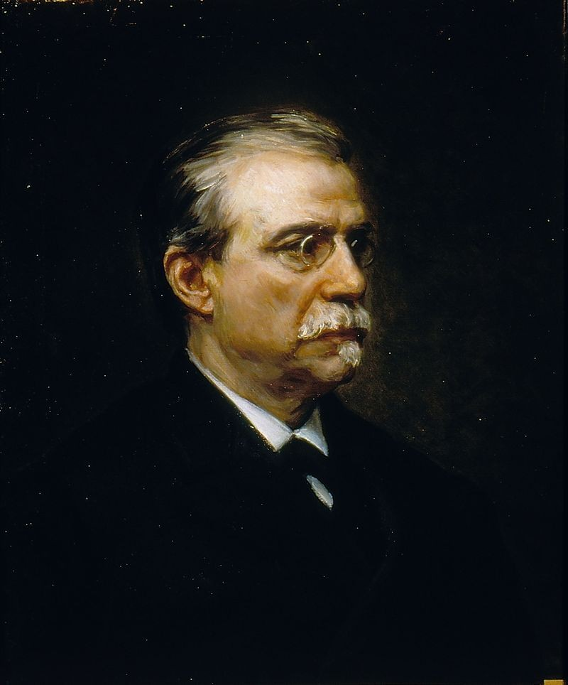

Tema 1: El Régimen de la Restauración Borbónica y su Evolución (1875 - 1931)
La estabilidad institucional cimentada en la Constitución de 1876, el turnismo pacífico y el caciquismo electoral, integrando el pleito y caciquismo en Canarias y la evolución hasta la crisis de la monarquía.
 Eje cronológico general de las fases políticas de la Restauración (1875 - 1931)
Eje cronológico general de las fases políticas de la Restauración (1875 - 1931)
1. El Regreso de los Borbones al Trono
El periodo histórico conocido como la Restauración Borbónica se inauguró a finales de 1874 y representó la vuelta de la dinastía legítima de los Borbones en la figura del joven príncipe Alfonso XII, hijo de la exiliada Isabel II. Tras el rotundo fracaso y caos institucional del Sexenio Democrático, el bando alfonsino capitalizó el anhelo generalizado de pacificación y orden civil del país.
 Imagen 1: Retrato oficial de S.M. Don Alfonso XII de Borbón en la academia de Sandhurst
Imagen 1: Retrato oficial de S.M. Don Alfonso XII de Borbón en la academia de Sandhurst
El retorno del rey se preparó de forma pacífica en el terreno diplomático a instancias de Antonio Cánovas del Castillo, quien redactó el célebre Manifiesto de Sandhurst el 1 de diciembre de 1874. En este manifiesto, firmado por el propio príncipe en el colegio militar británico, se presentaba al país la propuesta de una monarquía verdaderamente liberal, constitucional, estable y tradicionalmente católica.
A pesar del esfuerzo de Cánovas por una vía civil y parlamentaria, el general Arsenio Martínez Campos precipitó el cambio político mediante un pronunciamiento militar directo en Sagunto (Valencia) el 29 de diciembre de 1874. La rebelión armada triunfó de forma fulminante y sin apenas resistencia por todo el país, proclamando rey a Alfonso XII y devolviendo a España al modelo del liberalismo censitario conservador.
La Pacificación Militar: El fin de las contiendas
Para legitimarse y ganar la adhesión de la opinión pública, el nuevo gobierno de la Restauración priorizó la pacificación armada del territorio, cerrando de forma rápida los dos grandes frentes de guerra heredados:
- El Fin de la Tercera Guerra Carlista (1872-1876): La movilización masiva del ejército regular dirigida por Martínez Campos arrinconó a los insurgentes carlistas. El conflicto concluyó formalmente en marzo de 1876 tras la rendición foral y la huida al exilio en Francia del pretendiente Carlos VII (Manifiesto de Somorrostro). La consecuencia histórica fue la abolición definitiva del régimen foral tradicional vasco-navarro, que a cambio fue sustituido por el sistema tributario descentralizado de los Conciertos Económicos, un pilar diferenciador que cimentó el surgimiento posterior de un nacionalismo vasco de carácter reivindicativo.
- La Pacificación de Cuba y la Paz de Zanjón (1878): El fin de la guerra en la península permitió al general Martínez Campos centrar todos los recursos militares de la Corona en sofocar la insurrección en ultramar (Guerra de los Diez Años, 1868-1878). El pacto final de la Paz de Zanjón (1878) incluyó la amnistía para los revolucionarios rebeldes, la abolición gradual de la esclavitud y la firme promesa de conceder a Cuba una amplia autonomía administrativa y representación en el parlamento de Madrid. Sin embargo, el retraso sistemático y el posterior incumplimiento de estas promesas por parte de los gobiernos de turno crearon un ambiente de frustración nacional que daría lugar al estallido del nuevo y definitivo conflicto de 1895.
2. La Constitución de 1876 y las Bases del Sistema
La piedra angular del régimen fue la Constitución de 1876, sancionada en junio de ese año y redactada con un carácter intencionadamente flexible por una Asamblea de Notables para que sirviera tanto a moderados como a progresistas. Su flexibilidad técnica le permitió gozar de una asombrosa longevidad, manteniéndose en vigor hasta el año 1931.

Imagen 2: Antonio Cánovas del Castillo, el artífice conservador del sistema de la Restauración Imagen 3: Práxedes Mateo Sagasta, el impulsor del liberalismo reformista del turno
Imagen 3: Práxedes Mateo Sagasta, el impulsor del liberalismo reformista del turno
Sus fundamentos doctrinales y bases organizativas se resumen en los siguientes puntos clave:
- Soberanía Compartida Rey-Cortes: Rompía formalmente con el principio democrático de la soberanía nacional al consagrar que la soberanía histórica residía de forma conjunta en la Corona y en el Parlamento representativo.
- Amplias Prerrogativas para la Corona: El monarca ostentaba de forma preeminente el poder ejecutivo, el derecho de veto absoluto sobre las leyes aprobadas por las Cortes, el mando civil y militar del ejército y el poder de nombrar y destituir ministros de manera unilateral, así como convocar, suspender o disolver las cámaras sin consultar al parlamento.
- Cortes Bicamerales: El poder legislativo se dividía entre el Congreso de los Diputados (electivo mediante votación de los ciudadanos) y el Senado (órgano elitista y conservador constituido por senadores por derecho propio, senadores vitalicios de designación real, y una minoría elegida por los grandes contribuyentes).
- Indefinición del Tipo de Sufragio: Como método para facilitar la alternancia en el poder, la Constitución no fijaba de forma explícita el sistema de voto, delegándolo a las posteriores leyes electorales. Así, la Ley Electoral de 1878 restauró el sufragio censitario restrictivo (votaban solo el 5% de los ricos), hasta que en 1890 el Partido Liberal forzó la aprobación del sufragio universal masculino para todos los varones mayores de 25 años.
- Confesionalidad del Estado: El célebre Artículo 11 declaró a la religión católica como la única oficial y verdadera del Estado, consagrando la subvención financiera de la Iglesia a través de los presupuestos estatales de Culto y Clero, pero tolerando la libertad de culto y creencias individuales siempre y cuando no se realizase ninguna manifestación pública o ceremonia de carácter no católico en las calles.
- Subordinación Militar al Poder Civil: Se puso fin al constante golpismo militar del reinado de Isabel II mediante una Real Orden de 1875 que prohibió de forma taxativa la injerencia de los mandos militares en el juego de partidos políticos, relegando al ejército exclusivamente a la defensa nacional a cambio de un generoso y amplio presupuesto gubernamental.
 Imagen 4: Distribución de diputados tras las elecciones constituyentes de 1876 bajo sufragio universal provisional
Imagen 4: Distribución de diputados tras las elecciones constituyentes de 1876 bajo sufragio universal provisional
3. El Funcionamiento Electoral: Turnismo y Caciquismo Canario
Para garantizar una alternancia ordenada que cerrara las puertas a las revoluciones populares, Cánovas ideó el modelo del bipartidismo. El sistema se sustentaba en el pacto tácito entre dos grandes fuerzas monárquicas burguesas que aceptaban turnarse pacíficamente en el poder y respetar de mutuo acuerdo la obra legislativa de su predecesor:
- El Partido Conservador: Dirigido de forma indiscutible por Antonio Cánovas del Castillo, agrupaba a los sectores de la aristocracia, los antiguos moderados, y los grandes terratenientes deparando el orden católico riguroso y el proteccionismo económico agrario.
- El Partido Liberal (Fusionista): Liderado por Práxedes Mateo Sagasta, aglutinaba a antiguos progresistas, demócratas y unionistas de izquierda que promovían reformas modernizadoras de corte laico (como la libertad de imprenta, la abolición de la esclavitud, el matrimonio civil o la instauración del sufragio universal masculino).
El funcionamiento real del turnismo pacífico constituía una farsa y una completa inversión del sistema democrático. Una vez acordado el cambio, se seguía un mecanismo inverso al democrático: el rey nombraba un nuevo jefe de Gobierno, le otorgaba el decreto de disolución de las Cortes y, seguidamente, el nuevo gobierno convocaba unas elecciones completamente deparando el triunfo oficial. Las elecciones se controlaban desde el Ministerio de la Gobernación a través del encasillado (la asignación previa de escaños deparando listas con los diputados que obligatoriamente debían resultar ganadores en cada provincia, asegurando la mayoría del partido del turno).
Para conseguir esa mayoría falsificada, el gobierno movilizaba a los gobernadores civiles y, de forma prioritaria, a la red local de caciques (terratenientes o comerciantes ricos que dominaban las comarcas rurales). El cacique intercambiaba favores por votos, valiéndose de la miseria de los campesinos: si votaban al candidato gubernamental, les daba trabajo en el campo, agilizaba papeles o los libraba del sorteo de las quintas militares; de lo contrario, los condenaba al paro. El fraude se completaba el día de la votación mediante el pucherazo (la falsificación sistemática de las actas de escrutinio, la compra de sufragios o la inclusión de fallecidos en las urnas).
 Imagen 5: Ilustración de la revista satírica El Loro ironizando sobre los fallecidos que votaban en las urnas
Imagen 5: Ilustración de la revista satírica El Loro ironizando sobre los fallecidos que votaban en las urnas
 Imagen 6: Caricatura deparando la influencia y coacción clerical de los curas en los distritos rurales
Imagen 6: Caricatura deparando la influencia y coacción clerical de los curas en los distritos rurales
🏛️ El Caciquismo Canario y las redes del Pleito Insular
En el archipiélago canario, el sistema del turnismo y el fraude electoral canovista se adaptaron con una intensidad y fisionomía singulares debido al histórico conflicto del pleito insular motivado por la capitalidad única decretada en 1833 en favor de Santa Cruz de Tenerife.
Las redes del poder oligárquico de las islas mayores se organizaron de forma férrea y clientelar a través de los dos grandes partidos del turno:
- El Partido Conservador en Tenerife: Se convirtió en la fuerza política preponderante de la provincia, bajo la dirección del terrateniente e influyente diputado por La Orotava, Feliciano Pérez Zamora. Pérez Zamora dominaba el cabildo y las instituciones provinciales con el apoyo de la Iglesia católica y los terratenientes locales, asegurando la capitalidad única y canalizando de forma exclusiva los presupuestos estatales de Madrid hacia las obras públicas tinerfeñas.
- El Partido Liberal en Gran Canaria: Dirigido por la poderosa familia de los hermanos Juan y Fernando León y Castillo (este último diputado indiscutible y Ministro de Ultramar). Al frente de la burguesía comercial y mercantil grancanaria, los León y Castillo se aliaron con los intereses de las casas comerciales y navieras británicas para contrarrestar la hegemonía de Tenerife, impulsando de forma temprana un movimiento de reivindicación de la división provincial y canalizando el voto de Las Palmas en pro de los puertos francos.
Los caciques canarios ejercían una implacable dominación señorial sobre una inmensa masa de campesinos pobres en régimen de medianería o como jornaleros desposeídos. En una sociedad con altísimas tasas de analfabetismo y hambre periódica en el campo, el cacique controlaba el usufructo de las tierras y el acceso indispensable al agua de riego. La oligarquía y el clero canalizaban el descontento de las masas rurales para evitar cualquier tipo de estallido social, reprimiendo duramente las huelgas o las manifestaciones populares espontáneas nacidas ante la miseria agraria (como los sucesos de la "lucha por las papas y el pan" que asolaron Las Palmas en épocas de sequía).
4. La Regencia de María Cristina y el Pacto del Pardo (1885 - 1902)
La estabilidad del sistema canovista se enfrentó a su momento más delicado e incierto en noviembre de 1885 tras el fallecimiento repentino por tuberculosis del rey Alfonso XII con tan solo 28 años de edad. Al no existir un heredero varón vivo, sino únicamente dos infantas y un feto en gestación en el vientre de la reina consorte María Cristina de Habsburgo-Lorena, resurgió el fantasma de un nuevo estallido de la guerra civil carlista o de una insurrección republicana.
 Imagen 7: La reina María Cristina de Habsburgo jurando la Regencia ante las Cortes Generales (obra de Joaquín Sorolla)
Imagen 7: La reina María Cristina de Habsburgo jurando la Regencia ante las Cortes Generales (obra de Joaquín Sorolla)
Ante el peligro de colapso, Cánovas y Sagasta sellaron de forma solemne el histórico Pacto del Pardo (1885). Mediante este acuerdo, se decretaba el pleno apoyo político a la regencia de María Cristina y se acordaba la entrega inmediata del gobierno al Partido Liberal de Sagasta para que acometiera sus proyectadas reformas sin oposición conservadora, garantizando la paz civil.
El resultado del Pacto del Pardo fue el llamado «Gobierno Largo» de Sagasta (1885-1890), un periodo legislativo de extraordinaria estabilidad liberal que sirvió para profundizar en las libertades individuales del país y desactivar la movilización popular mediante leyes deparadoras de libertades:
- Se decretó la Ley de Asociaciones de 1887, que eliminó la distinción entre partidos legales e ilegales y abrió la vía a la legalización de los sindicatos y partidos obreros contemporáneos (como el PSOE y la UGT).
- Se redactó el nuevo Código Civil de 1889, unificando la legislación y consolidando el derecho de propiedad privada.
- Se abolió definitivamente la esclavitud en Cuba y Puerto Rico, cumpliendo lo acordado en Zanjón.
- Se aprobó la de mayor trascendencia, la Ley del Sufragio Universal Masculino en 1890, concediendo el derecho de voto a todos los varones de más de 25 años. No obstante, al mantenerse el caciquismo electoral, el sufragio universal deparó simplemente un censo mayor manipulado por el gobierno.
 Imagen 8: Caricatura de la revista El Loro ironizando sobre el turnismo pacífico y el Pacto del Pardo
Imagen 8: Caricatura de la revista El Loro ironizando sobre el turnismo pacífico y el Pacto del Pardo
5. La Crisis del Turnismo y el Reinado de Alfonso XIII (1902 - 1923)
En mayo de 1902, al cumplir la edad constitucional de 16 años, Alfonso XIII fue proclamado rey e inició su reinado personal. La etapa estuvo marcada por el desmoronamiento paulatino del sistema del turno pacífico tras la desaparición física de sus dos grandes pilares fundadores (Cánovas fue asesinado en 1897 y Sagasta falleció en 1903), abriendo paso a una profunda crisis de liderazgo político dentro de los dos partidos de turno.
Los nuevos líderes ensayaron sendos proyectos reformistas conocidos como el revisionismo político o regeneracionismo desde el poder:
- El Revisionismo Conservador de Antonio Maura (1907-1909): Promovió su proyecto de "revolución desde arriba" para reformar el sistema administrativo desde el propio gobierno y evitar una revolución violenta del pueblo. Entre sus medidas, impulsó la Ley Electoral de 1907, orientada a erradicar el fraude introduciendo el voto obligatorio, aunque incluyó el polémico Artículo 29 (por el cual se proclamaba automáticamente diputado al candidato si no se presentaba ningún rival en su circunscripción, lo que reforzó el poder de los caciques en los distritos controlados).
- La Semana Trágica de Barcelona (julio de 1909): El de la guerra de Marruecos y el envío de reservistas catalanes a combatir tras el desastre del Barranco del Lobo desataron una huelga general obrera en Barcelona. La huelga derivó en una sangrienta insurrección popular con quema de conventos y barricadas. La represión gubernamental de Maura fue brutal (más de 75 muertos y fusilamientos expeditivos en Montjuic, entre ellos el del pedagogo anarquista Francisco Ferrer y Guardia, fundador de la Escuela Moderna, ejecutado sin pruebas sólidas, provocando la caída del gobierno al grito de «¡Maura no!»).
- El Revisionismo Liberal de José Canalejas (1910-1912): Intentó democratizar el régimen mediante un reformismo social de corte laico. Promulgó la Ley del Candado (1910) para frenar la instalación de nuevas congregaciones religiosas y ordenó la abolición del impuesto de consumos (sustituyéndolo por un impuesto progresivo). De igual modo, reguló el trabajo de las mujeres e instauró el servicio militar obligatorio sin exención por pago (aunque creando los soldados de cuota). Su obra reformadora se truncó tras ser asesinado por un anarquista en la Puerta del Sol de Madrid en 1912.
La inestabilidad se agudizó tras el estallido de la Primera Guerra Mundial y la Triple Crisis de 1917:
- La Crisis Militar (Juntas de Defensa): Las Juntas Militares de mandos intermedios del ejército desafiaron al gobierno exigiendo mejoras salariales y protestando contra los ascensos por méritos de guerra arbitrarios de los "africanistas", deparando una fuerte influencia de las armas sobre el parlamento.
- La Crisis Política (Asamblea de Parlamentarios): Parlamentarios de la oposición catalanista de la Lliga, republicanos y socialistas se reunieron en Barcelona exigiendo el fin del turno y la convocatoria de Cortes constituyentes.
- La Crisis Social (Huelga General Revolucionaria de agosto de 1917): Convocada de forma conjunta por los sindicatos de la UGT y la CNT en protesta por el disparo desmesurado de la inflación y la carestía de la vida que había deparado la Gran Guerra europea. El de las huelgas fue total en Madrid, Asturias, Vizcaya y Barcelona, hasta que el gobierno militarizó el país y el ejército aplastó la huelga por la fuerza, dejando un centenar de muertos.
Tras la crisis de 1917, el turno se hundió por completo, sucediéndose efímeros gobiernos de concentración deparando una inestabilidad absoluta (13 gabinetes ministeriales en seis años). El de la agitación obrera en el sur (Trienio Bolchevique, 1918-1921), el pistolerismo en Cataluña y la Ley de Fugas concluyó en la gran tragedia de la derrota colonial del Desastre de Annual en julio de 1921 en Marruecos, donde la imprudencia del general Silvestre provocó la muerte de más de 10.000 soldados españoles a manos del líder rifeño Abd el-Krim, desatando la exigencia de responsabilidades en el Expediente Picasso.
🇮🇨 Canarias: La visita real de 1906 y los Cabildos de 1912
En el marco de esta crisis general del turnismo, el descontento por el pleito insular canario alcanzó su clímax, deparando dos hitos legislativos históricos:
- La visita del rey Alfonso XIII en 1906: Fue la primera visita oficial de un monarca reinante a las islas. Durante su escala tanto en Tenerife como en Gran Canaria, Alfonso XIII presenció de primera mano las tensiones por el pleito insular, donde la burguesía grancanaria le exigió la división de la provincia única y las islas menores demandaron el fin de su asfixia administrativa.
- La histórica Ley de Cabildos Insulares de 1912: Para resolver el pleito insular, el ministro de Fomento, Manuel de Cámara, promovió y promulgó la histórica Ley del 11 de julio de 1912. Esta medida de corte descentralizador abolió el control tinerfeño de las islas periféricas al crear para cada una de las siete islas un cabildo insular, una corporación con competencias locales administrativas y fiscales. La Ley de Cabildos pacificó provisionalmente las relaciones regionales, convirtiéndose en el modelo tradicional de autogobierno por excelencia.
6. La Dictadura de Primo de Rivera y la Caída de la Monarquía (1923 - 1931)
Ante la inminencia de que las Cortes debatieran el Expediente Picasso del desastre de Annual, el 13 de septiembre de 1923 el Capitán General de Cataluña, Miguel Primo de Rivera, dio un golpe de Estado militar. El rey Alfonso XIII, deseoso de un gobierno de fuerza, aceptó la sublevación y entregó el poder al general, suspendiendo la Constitución.
La andadura de la dictadura se dividió en dos etapas fundamentales:
- El Directorio Militar (1923-1925): Gobierno constituido por militares que suspendió las libertades constitucionales, clausuró las Cortes y prohibió los partidos. Su mayor éxito fue la resolución definitiva del problema marroquí mediante el exitoso Desembarco de Alhucemas (septiembre de 1925), una operación anfibia coordinada con Francia que forzó la rendición de Abd el-Krim y pacificó el protectorado.
- El Directorio Civil (1925-1930): Transición hacia un modelo corporativista inspirado en el fascismo italiano. Primo de Rivera fundó la Unión Patriótica (como partido político único de carácter inoperante) y la Asamblea Nacional Consultiva* (con miembros designados directamente para asesorar al dictador pero sin función legislativa real). Se acometió una ambiciosa política de obras públicas (regadíos, carreteras, embalses) apoyada en monopolios estatales como Campsa y Telefónica.
La caída del dictador se precipitó en 1929 debido a la ruina financiera (endeudamiento y caída de la peseta) que coincidió con el crack de Nueva York, desatando el descontento de intelectuales y mandos militares. En enero de 1930, Primo de Rivera presentó su dimisión ante el rey y se exilió a París, donde falleció pocas semanas después.
Para encauzar la caída de la dictadura, Alfonso XIII nombró presidente al general Berenguer (periodo conocido como la «Dictablanda»), intentando sin éxito volver a la normalidad de 1876. La oposición firmó el Pacto de San Sebastián (agosto de 1930), un programa común para derrocar la monarquía. Finalmente, el almirante Aznar convocó elecciones municipales para el 12 de abril de 1931. El triunfo aplastante de las candidaturas republicanas en casi todas las capitales de provincia fue interpretado como un plebiscito directo contra la corona, forzando la huida del monarca al exilio y la proclamación de la Segunda República el 14 de abril de 1931.
🇮🇨 Canarias y la división provincial definitiva de 1927
En el plano canario, el acontecimiento más trascendental de este periodo se deparó bajo el gobierno de la Dictadura. El general Miguel Primo de Rivera resolvió de forma definitiva el enconado pleito insular de capitalidad única de Javier de Burgos de 1833 mediante la firma del histórico Real Decreto del 21 de septiembre de 1927.
Esta medida de corte descentralizador provincial dividió el archipiélago canario en dos provincias independientes y autónomas:
- La provincia de Las Palmas, con capital en Las Palmas de Gran Canaria, que agrupaba a las islas orientales (Gran Canaria, Fuerteventura y Lanzarote).
- La provincia de Santa Cruz de Tenerife, con capital en Santa Cruz de Tenerife, que agrupaba a las islas occidentales (Tenerife, La Palma, La Gomera y El Hierro).
Con esta histórica división se cerró definitivamente la lucha por la hegemonía regional, encauzando la convivencia de las islas y sentando las bases del equilibrio regional bicapitalino canario contemporáneo.